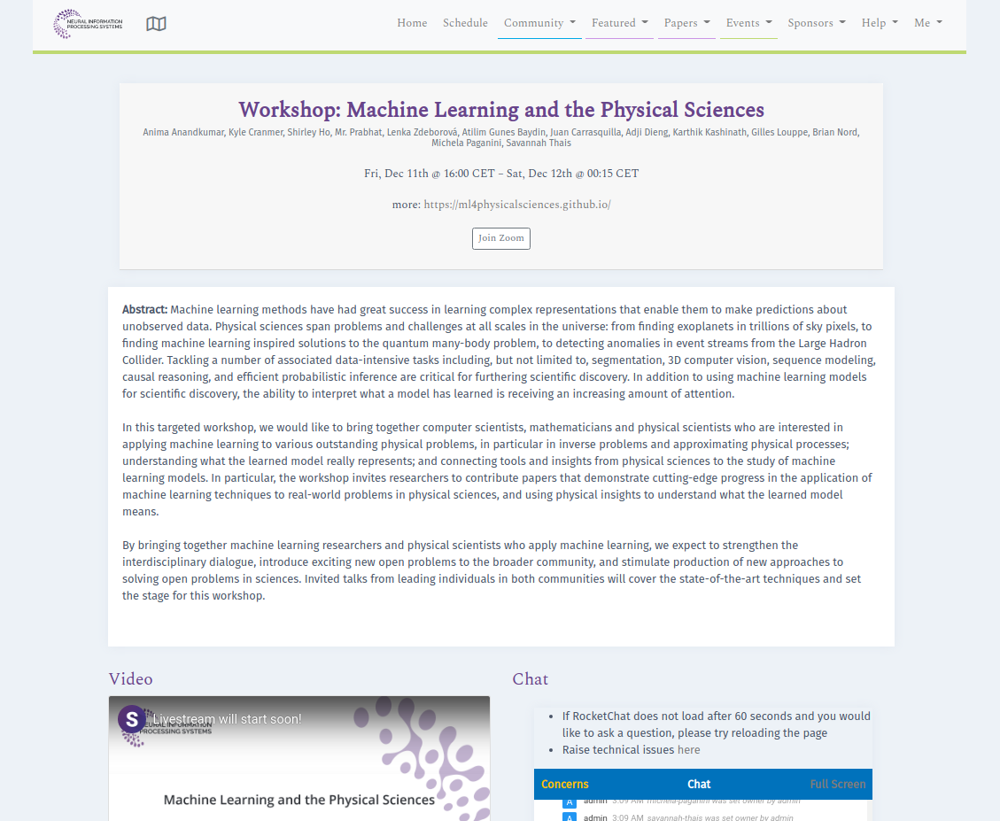
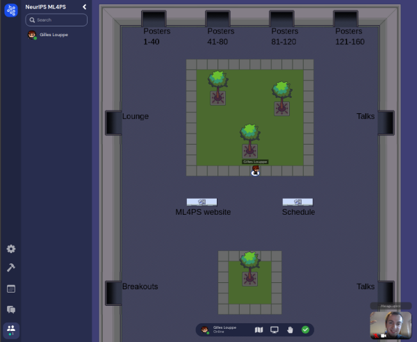
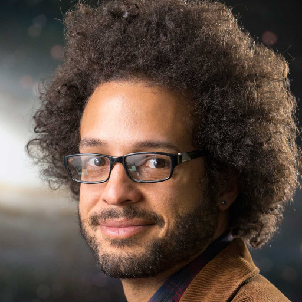

-

Official NeurIPS ML4PS schedule
(for NeurIPS attendees) -

ML4PS Gather Town(for NeurIPS attendees)
How to attend
The workshop is taking place on Friday, December 11, 2020. It will be a combination of: (1) streamed invited talks and Q&A sessions, which can be watched live via SlidesLive or Zoom, and (2) poster sessions for accepted papers and community development breakouts, which are hosted in Gather Town.
Streamed talks and Q&A sessions: follow the Official NeurIPS ML4PS schedule link on top of this page, which will take you to the page with the live SlidesLive stream and a RocketChat box where you can ask questions during the Q&A sessions. On the same page you can also find a Zoom link to join the same stream as a Zoom webinar (optional).
Poster sessions and community development breakouts: follow the ML4PS Gather Town link on top of this page that will take you to the workshop's Gather Town space, an interactive online environment where you can walk around and browse the posters, and interact with poster presenters and other attendees. This is the same setup used by NeurIPS main conference, and you can see an introductory video about Gather Town poster sessions here.
Note that all accepted papers, posters and poster videos are also accessible publicly on this web page below.
Invited Speakers
-

Lauren AndersonCarnegie Observatories
-
Michael BronsteinImperial College London
-

Estelle InackPerimeter Institute
-
Phiala ShanahanMassachusetts Institute of Technology
-

Laura WallerUC Berkeley
Schedule
Check the times for your local time zone
- First go to NeurIPS general schedule page. You can use the time zone selection dropdown menu to set your preference.
- Afterwards when you go to the workshop's schedule page, the times should appear in your selected time zone.
Note: the times given below are in US/Eastern (UTC-5).
Session 1
| 10:00 AM – 10:10 AM | SlidesLive/Zoom |
Opening remarks (live) |
| 10:10 AM – 10:35 AM | SlidesLive/Zoom |
Invited talk: "3D Milky Way Dust Map using a Scalable Gaussian Process" (live) Lauren Anderson (Carnegie Observatories) |
| 10:35 AM – 10:45 AM | SlidesLive/Zoom |
Q&A with Lauren Anderson (live) |
| 10:45 AM – 11:10 AM | SlidesLive/Zoom |
Invited talk: "Geometric Deep Learning for Functional Protein Design" (live) Michael Bronstein (Imperial College London) |
| 11:10 AM – 11:20 AM | SlidesLive/Zoom |
Q&A with Michael Bronstein (live) |
| 11:20 AM – 12:50 PM | Gather Town |
Poster session (live) |
Session 2
| 12:50 PM – 12:55 PM | SlidesLive/Zoom |
Opening remarks (live) |
| 12:55 PM – 01:20 PM | SlidesLive/Zoom |
Invited talk: "Variational Neural Annealing" Estelle Inack (Perimeter Institute) |
| 01:20 PM – 01:30 PM | SlidesLive/Zoom |
Q&A with Estelle Inack (live) |
| 01:30 PM – 01:55 PM | SlidesLive/Zoom |
Invited talk: "Generative Flow Models for Gauge Field Theory" Phiala Shanahan (Massachusetts Institute of Technology) |
| 01:55 PM – 02:05 PM | SlidesLive/Zoom |
Q&A with Phiala Shanahan (live) |
| 02:05 PM – 03:35 PM | Gather Town |
Poster session (live) |
Session 3
| 03:35 PM – 03:40 PM | SlidesLive/Zoom |
Opening remarks (live) |
| 03:40 PM – 04:05 PM | SlidesLive/Zoom |
Invited talk: "Physics-based Learning for Computational Microscopy" Laura Waller (UC Berkeley) |
| 04:05 PM – 04:15 PM | SlidesLive/Zoom |
Q&A with Laura Waller (live) |
| 04:15 PM – 05:45 PM | Gather Town |
Community development breakouts (live) |
| 05:45 PM – 06:15 PM | SlidesLive/Zoom |
Feedback from community development breakouts (live) |
Papers/Posters
We have accepted 155 papers for poster presentation at the workshop. Note that the numbers below refer to each accepted paper's poster session ID and this is different from the paper's CMT paper ID that was used during paper submission and review.
| 1 | Towards A Pseudo-Reaction-Diffusion Model for Turing Instability in Adversarial Learning [pdf] [poster] Litu Rout |
| 2 | Hierarchical clustering in particle physics through reinforcement learning [pdf] [poster] Johann Brehmer, Sebastian Macaluso, Duccio Pappadopulo, Kyle Cranmer |
| 3 | Predicting galaxy spectra from images with hybrid convolutional neural networks [pdf] [poster] [video] John F Wu, Joshua Peek |
| 4 | Differentiable Physics for Improving the Accuracy of Iterative PDE-Solvers with Neural Networks [pdf] [poster] [video] Kiwon Um, Yun Raymond Fei, Philipp Holl, Robert Brand, Nils Thuerey |
| 5 | Lightning-Fast Gravitational Wave Parameter Inference through Neural Amortization [pdf] [poster] Arnaud Delaunoy, Antoine Wehenkel, Christoph Weniger, Andrew R Williamson, Samaya Nissanke, Tanja Hinderer, Gilles Louppe |
| 6 | Simulation-Assisted Decorrelation for Resonant Anomaly Detection [pdf] [poster] [video] Luc T Le Pottier, Benjamin Nachman, Kees Benkendorfer |
| 7 | Probabilistic neural network-based reduced-order surrogate for fluid flows [pdf] [poster] [video] Kai Fukami, Romit Maulik, Nesar Ramachandra, Koji Fukagata, Kunihiko Taira |
| 8 | CNN-AE/LSTM based turbulent flow forecast on low-dimensional latent space [pdf] [poster] [video] Taichi Nakamura, Kai Fukami, Kazuto Hasegawa, Yusuke Nabae, Koji Fukagata |
| 9 | A Quantum-Inspired Probabilistic Model for the Inverse Design of Meta-Structures [pdf] [poster] Yingtao Luo, Xuefeng Zhu |
| 10 | Bayesian parameter estimation using conditional variational autoencoders for gravitational-wave astronomy [pdf] [poster] [video] Hunter A Gabbard, Chris Messenger, Ik Siong Heng, Francesco Tonolini, Roderick Murray-Smith |
| 11 | A Deep Learning Approach for Characterizing Major Galaxy Mergers [pdf] [poster] Skanda K Koppula, Victor Bapst, Marc Huertas-Company, Sam Blackwell, Agnieszka Grabska-Barwinska, Sander Dieleman, Andrea Huber, Natasha Antropova, Mikołaj Bińkowski, Hannah Openshaw, Adria Recasens, Fernando Caro, Avishai Dekel, Yohan Dubois, Jesus Vega Ferrero, David Koo, Joel Primack, Trevor Back |
| 12 | Deep Potential: Recovering the gravitational potential from a snapshot of phase space [pdf] [poster] [video] Gregory M Green, Yuan-Sen Ting |
| 13 | Unsupervised in-distribution anomaly detection of new physics through conditional density estimation [pdf] [poster] George F Stein, Uroš Seljak, Biwei Dai |
| 14 | Inversion of Ultrafast X-ray Scattering with Dynamics Constraints [pdf] [poster] [video] Martin Asenov, Nikola Zotev, Subramanian Ramamoorthy, Adam Kirrander |
| 15 | Hey, that's not an ODE: Faster ODE Adjoints with 12 Lines of Code [pdf] [poster] Patrick Kidger, Ricky T. Q. Chen, Terry J Lyons |
| 16 | Unsupervised Neural Networks for Quantum Eigenvalue Problems [pdf] [poster] [video] Henry Jin, Marios Mattheakis, Pavlos Protopapas |
| 17 | Estimating Galactic Distances From Images Using Self-supervised Representation Learning [pdf] [poster] Md Abul Hayat, Peter Harrington, George Stein, Zarija Lukić, Mustafa Mustafa |
| 18 | Denoising Autoencoders for High-Qubit Quantum Dynamics Simulations on Quantum Computers [pdf] [poster] Connor D Powers, Lindsay Bassman, Yifan Geng, Rajiv Kalia, T. K. Satish Kumar, Thomas Linker, Kuang Liu, Aiichiro Nakano, Pankaj Rajak, Priya Vashishta |
| 19 | Graph neural network for 3D node classification in scintillator-based neutrino detectors [pdf] [poster] Saul Alonso Monsalve, Dana Douqa, Cesar Jesus-Valls, Thorsten Lux, Sebastian Pina-Otey, Federico Sanchez, Davide Sgalaberna, Leigh H. Whitehead |
| 20 | Semi-parametric γ-ray modeling with Gaussian processes and variational inference [pdf] [poster] Siddharth Mishra Sharma, Kyle Cranmer |
| 21 | Wyckoff Set Regression for Materials Discovery [pdf] [poster] Rhys E A Goodall, Abhijith S Parackal, Felix A Faber, Rickard Armiento, Alpha A Lee |
| 22 | Physics-Consistent Data-driven Seismic Inversion with Adaptive Data Augmentation [pdf] [poster] [video] Youzuo Lin, Renán A Rojas-Gómez, Jihyun Yang, Brendt Wohlberg, James Theiler |
| 23 | Approximating Ground State Energies and Wave Functions of Physical Systems with Neural Networks [pdf] [poster] Cesar Lema, Anna Choromanska |
| 24 | Learning summary features of time series for likelihood free inference [pdf] [poster] Pedro Rodrigues, Alexandre Gramfort |
| 25 | Classification of Optical Transients at the MeerLICHT Telescope using Deep Learning [pdf] [poster] Zafiirah Hosenie, Robert Lyon, Paul Groot, Benjamin Stappers |
| 26 | Data Augmentation in a Hierarchical-Based Classification scheme for Variable Stars [pdf] [poster] Zafiirah Hosenie, Robert Lyon, Benjamin Stappers, Arrykrishna Mootoovaloo, Vanessa McBride |
| 27 | Physics-Aware Image-to-Image Translation to Explore Long-Life All-Solid-State Batteries [pdf] [poster] Masaki Adachi, Ignas Budvytis, Caterina Ducati, Roberto Cipolla |
| 28 | Better, Faster Fermionic Neural Networks [pdf] [poster] [video] James Spencer, David Pfau, Alex Botev, WMC Foulkes |
| 29 | Semi-supervised Neural Networks solve an inverse problem for modeling Covid-19 spread [pdf] [poster] Alessandro Saverio Paticchio, Marios Mattheakis, Pavlos Protopapas, Marco Brambilla, Tommaso Scarlatti |
| 30 | Probing Dark Matter Substructure with Stellar Streams and Neural Simulation-Based Inference [pdf] [poster] Joeri Hermans, Nilanjan Banik, Christoph Weniger, Gianfranco Bertone, Gilles Louppe |
| 31 | Integrable Nonparametric Flows [pdf] [poster] David Pfau, Danilo Jimenez Rezende |
| 32 | Dynamics of continuous-time gated recurrent neural networks [pdf] [poster] Tankut Can, Kamesh Krishnamurthy, David Schwab |
| 33 | Extending Galactic foreground models for CMB experiments with GANs [pdf] [poster] Nicoletta Krachmalnicoff, Giuseppe Puglisi |
| 34 | Density function estimation using ergodic recursion [pdf] [poster] Erik Bodin, Zhenwen Dai, Neill Campbell, Carl Henrik Ek |
| 35 | Learning Deep Generative Models with Annealed Importance Sampling [pdf] [poster] Xinqiang Ding, David Freedman |
| 36 | Meta Variational Monte Carlo [pdf] [poster] Tianchen Zhao, James Stokes, Oliver Knitter, Brian Chen, shravan veerapaneni |
| 37 | Flow networks as learning machines [pdf] [poster] Menachem Stern, Daniel Hexner, Jason Rocks, Andrea Liu |
| 38 | Neural CDEs for Long Time Series via the Log-ODE Method [pdf] [poster] Patrick Kidger, James Morrill, Cristopher Salvi, James Foster, Terry J Lyons |
| 39 | Neural SDEs Made Easy: SDEs are Infinite-Dimensional GANS [pdf] [poster] Patrick Kidger, James Foster, Xuechen Li |
| 40 | Accelerating MCMC algorithms through Bayesian Deep Networks [pdf] [poster] [video] Hector J Hortua, Dimitri Marinelli, Riccardo Volpi, Luigi Malagò |
| 41 | ADCME: Learning Spatially-varying Physical Fields using Deep Neural Networks [pdf] [poster] Kailai Xu, Eric Darve |
| 42 | Consistent and accurate estimation of stellar parameters from HARPS-N Spectroscopy [pdf] [poster] Frederik B Hüttel, Line Clemmensen |
| 43 | Low-light image enhancement of permanently shadowed lunar regions with physics-based machine learning [pdf] [poster] Ben Moseley, Valentin Bickel, Ignacio Lopez-Francos, Loveneesh Rana, Miguel Olivares, Dennis Wingo, Allison Zuniga, Nuno Subtil |
| 44 | Detection of plasma confinement states in the TCV tokamak [pdf] [poster] Gino Marceca, Francisco Matos, Vlado Menkovski, Alessandro Pau |
| 45 | Controlling Classifier Bias with Moment Decomposition: A Method to Enhance Searches for Resonances [pdf] [poster] [video] Ouail Kitouni, Benjamin Nachman, Constantin Weisser, Mike Williams |
| 46 | Deep reinforcement learning control of flow over rotary oscillating cylinder at low Reynolds number [pdf] [poster] Mikhail Tokarev, Evgeniy Pavlovskiy, Egor Palkin, Rustam Mullyadzhanov |
| 47 | Approximate Bayesian Geophysical Inversion using Generative Modeling and Subset Simulation [pdf] [poster] Eliane Maalouf, David Ginsbourger, Niklas Linde |
| 48 | Solving Inverse Problems for Spectral Energy Distributions with Deep Generative Networks [pdf] [poster] [video] Agapi Rissaki, Orestis Pavlou, Dimitris Fotakis, Vicky Papadopoulou, Andreas Efstathiou |
| 49 | Automating Inference of Binary Microlensing Events with Neural Density Estimation [pdf] [poster] Keming Zhang, Joshua Bloom, Scott Gaudi, Francois Lanusse, Casey Lam, Jessica Lu |
| 50 | Normalizing Flows as a Novel PDF Turbulence Model [pdf] [poster] Deniz A Bezgin, Nikolaus Adams |
| 51 | Geotechnical Site Characterization via Deep Neural Networks: Recovering the Shear Wave Velocity Profile of Layered Soils [pdf] [poster] Peyman Ayoubi, Elnaz Seylabi, Domniki Asimaki |
| 52 | Quantum Model Learning Agent [pdf] [poster] Brian Flynn, Antonio Gentile, Nathan Wiebe, Anthony Laing, Raffaele Santagati |
| 53 | Discrete Fracture Network insights by eXplainable AI [pdf] [poster] [video] Stefano Berrone, Francesco Della Santa, Antonio Mastropietro, Sandra Pieraccini, Francesco Vaccarino |
| 54 | Physics-Informed Discriminator (PID) for Conditional Generative Adversarial Nets [pdf] [poster] [video] Arka Daw, M. Maruf, Anuj Karpatne |
| 55 | Targeted Likelihood-Free Inference of Dark Matter Substructure in Strongly-Lensed Galaxies [pdf] [poster] Adam Coogan, Kosio Karchev, Christoph Weniger |
| 56 | The Mass-ive Issue: Anomaly Detection in Jet Physics [pdf] [poster] [video] Tobias Golling, Takuya Nobe, Dimitrios Proios, John Andrew Raine, Debajyoti Sengupta, Slava Voloshynovskiy, Jean-Francois Arguin, Julien Leissner Martin, Jacinthe Pilette, Debottam Bakshi Gupta, Amir Farbin |
| 57 | Global Earth Magnetic Field Modeling and Forecasting with Spherical Harmonics Decomposition [pdf] [poster] Panagiotis Tigas, Yarin Gal, Asti Bhatt, Ryan M. McGranaghan, Téo Bloch, Mark C. M. Cheung, Vishal Upendran, Bashi Ferdoushi, Siddha Ganju, Siddha Ganju, Bashi Ferdoushi |
| 58 | Automated Multi-layer Optical Design via Deep Reinforcement Learning [pdf] [poster] Haozhu Wang, L. Jay Guo, Zeyu Zheng, Chengang Ji |
| 59 | Amplifying Statistics using Generative Models [pdf] [poster] [video] Anja Butter, Sascha Diefenbacher, Gregor Kasieczka, Benjamin Nachman, Tilman Plehn |
| 60 | Large deviations of one-dimensional kinetically constrained models with recurrent neural networks [pdf] [poster] Corneel Casert, Tom Vieijra, Stephen Whitelam, Isaac Tamblyn |
| 61 | Curriculum reinforcement learning for optimization of variational quantum circuit architectures [pdf] [poster] [video] Mateusz Ostaszewski, Wojciech Masarczyk, Lea Trenkwalder, Eleanor Scerri, Vedran Dunjko |
| 62 | Astronomical Image Quality Prediction based on Environmental and Telescope Operating Conditions [pdf] [poster] Sankalp Gilda, Yuan-Sen Ting, Kanoa Withington, Matthew Wilson, Simon Prunet, William Mahoney, Sebastien Fabbro, Stark Draper, Andrew Sheinis |
| 63 | Anomaly Detection for Multivariate Time Series of Exotic Supernovae [pdf] [poster] Victoria A Villar, Miles Cranmer, Gabriella Contardo, Shirley Ho, Joshua Yao-Yu Lin |
| 64 | The Error Analysis of Numerical Integrators for Deep Neural Network Modeling of Differential Equations [pdf] [poster] [video] Shunpei Terakawa, Takashi Matsubara, Takaharu Yaguchi |
| 65 | Max-value Entropy Search for Multi-Objective Bayesian Optimization with Constraints [pdf] [poster] Syrine Belakaria, Aryan Deshwal, Janardhan Rao Doppa |
| 66 | Neural ODE Processes [pdf] [poster] Alexander LI Norcliffe, Cristian Bodnar, Ben J Day, Jacob Moss, Pietro Lió |
| 67 | Temperature-steerable flows [pdf] [poster] [video] Manuel Dibak, Leon Klein, Frank Noe |
| 68 | RotNet: Fast and Scalable Estimation of Stellar Rotation Periods Using Convolutional Neural Networks [pdf] [poster] Juan Emmanuel Johnson, Tansu Daylan, Lisseth Gavilan, Daniel Giles, Stela Ishitani Silva, Anna Jungbluth, Brett Morris, Andrés Muñoz-Jaramillo, Sairam Sundaresan |
| 69 | Meta-Learned Hamiltonian [pdf] [poster] Seungjun Lee, Woojae Seong |
| 70 | Exact Inference on Hierarchical Clustering in Particle Physics and Cancer Genomics [pdf] [poster] Sebastian Macaluso, Craig S Greenberg, Nicholas Monath, Ji Ah Lee, Patrick Flaherty, Kyle Cranmer, Andrew McGregor, Andrew McCallum |
| 71 | Anomaly Detection in Astronomical Images with Generative Adversarial Networks [pdf] [poster] Kate Storey-Fisher, Marc Huertas-Company, Nesar Ramachandra, Francois Lanusse, Alexie Leauthaud, Yifei Luo, Song Huang |
| 72 | End-to-End Differentiable Molecular Mechanics Force Field Construction [pdf] [poster] [video] Yuanqing Wang, Josh Fass, John Chodera |
| 73 | Learning latent field dynamics of PDEs [pdf] [poster] Dmitrii Kochkov, Alvaro Sanchez-Gonzalez, Jamie Smith, Michael Brenner, Tobias Pfaff, Peter Battaglia |
| 74 | HydroNet: Benchmark Tasks for Preserving Long-range Interactions and Structural Motifs in Predictive and Generative Models for Molecular Data [pdf] [poster] Sutanay Choudhury, Jenna Bilbrey, Logan Ward, Sotiris Xantheas, Ian Foster, Joseph Heindel, Ben Blaiszik, Marcus Emory Schwarting |
| 75 | A Proposed d Dimensional Kolmogorov-Smirnov Distance [pdf] [poster] Alex Hagen, Jan Strube, Connor Hainje, James Kahn, Isabel Haide |
| 76 | Inferring parameters for binary black hole mergers using normalizing flows [pdf] [poster] Stephen R Green, Jonathan Gair |
| 77 | Variational Neural Annealing [pdf] [poster] Mohamed Hibat-Allah, Estelle Inack, Roeland Wiersema, Roger G Melko, Juan Carrasquilla |
| 78 | AGNet: Weighing Black Holes with Machine Learning [pdf] [poster] [video] Joshua Yao-Yu Lin, Sneh Pandya, Devanshi Pratap, Xin Liu, Matias Carrasco Kind |
| 79 | Progress towards high fidelity collisional-radiative model surrogates for rapid in-situ evaluation [pdf] [poster] Nathan A Garland, Romit Maulik, Qi Tang, Xian-Zhu Tang, Prasanna Balaprakash |
| 80 | Debunking Generalization Error or: How I Learned to Stop Worrying and Love My Training Set [pdf] [poster] Viviana Acquaviva, Christopher Lovell, Emille E. O. Ishida |
| 81 | Random forests for Accelerating Turbulent Combustion Simulations [pdf] [poster] Wai Tong Chung, aashwin mishra, Nikolaos Perakis, Matthias Ihme |
| 82 | ConvLSTMs for vertical ocean velocity prediciton in the North Atlantic [pdf] [poster] Meera Desai, David Lindo-Atichati |
| 83 | SEARCH: SEgmentation of polAR Coronal Holes [pdf] [poster] Ajay Kumar Tiwari, Benoit Tremblay, Andong Hu, Linnea Wolniewicz, Michael Kirk, Silvina Guidoni, Brent Smith, Matthew Penn, Tanmoy Samanta |
| 84 | Simultaneously forecasting global geomagnetic activity using recurrent networks [pdf] [poster] Charles A Topliff, Morris Cohen, William Bristow |
| 85 | Orthogonal Laguerre Recurrent Neural Networks [pdf] [poster] [video] Sergio A. Dorado-Rojas, Bhanukiran Vinzamuri, Luigi Vanfretti |
| 86 | Data-Driven Density Functional Theory: A case for Physics Informed Learning [pdf] [poster] [video] Peter Yatsyshin, Serafim Kalliadasis, Andrew Duncan |
| 87 | Certificates of many-body properties assisted by machine learning [pdf] [poster] Borja Requena-Pozo, Gorka Muñoz-Gil, Maciej Lewenstein, Vedran Dunjko, Jordi Tura |
| 88 | Kohn-Sham equations as regularizer: building prior knowledge into machine-learned physics [pdf] [poster] Li Li, Stephan Hoyer, Ryan Pederson, Ruoxi Sun, Ekin D Cubuk, Patrick Riley, Kieron Burke |
| 89 | Domain adaptation techniques for improved cross-domain study of galaxy mergers [pdf] [poster] Aleksandra Ciprijanovic, Diana Kafkes, Gabriel Nathan Perdue, Sandeep Madireddy, J. Travis Johnston, Brian Nord, Kathryn Downey, Sydney Jenkins |
| 90 | Generating Magnetic Skyrmion Ground States with Generative Adversarial Networks [pdf] [poster] Bozhidar Trenchev, Srinandan Dasmahapatra, Marijan Beg, Ondrej Hovorka, Natalie Downing |
| 91 | Deep Reinforcement Learning for Protein Folding in the Hydrophobic-Polar Model with Pull Moves [pdf] [poster] Haoyang Yu, Wann-Jiun Ma, John Schreck |
| 92 | Scalable variational Monte Carlo with graph neural ansatz [pdf] [poster] Li Yang, Wenjun Hu, Li Li |
| 93 | Learning Multiple Networks via Supervised Tensor Decomposition [pdf] [poster] [video] Jiaxin Hu, Chanwoo Lee, Miaoyan Wang |
| 94 | Discovering the Underlying Equations Governing Perovskite Solar-Cell Degradation Using Scientific Machine Learning [pdf] [poster] Richa R Naik, Armi Tiihonen, Janak Thapa, Clio Batali, Shijing Sun, Zhe Liu, Tonio Buonassisi |
| 95 | Quantum Dynamics by Solving Probabilisitic Differential Equations via Autoregressive Networks [pdf] [poster] [video] Di Luo, Zhuo Chen, Juan Carrasquilla, Bryan Clark |
| 96 | Multi-Constitutive Neural Network for Large Deformation Poromechanics Problem [pdf] [poster] Qi Zhang, Yilin Chen, Ziyi Yang, Eric Darve |
| 97 | Interplay of rearrangements, strain, and local structure during avalanche propagation [pdf] [poster] Ge Zhang, Sean Ridout, Andrea Liu |
| 98 | An End-to-End AI-Driven Simulation Framework [pdf] [poster] Oliver Hennigh, Susheela Narasimhan, Mohammad Amin Nabian, Akshay Subramaniam, Kaustubh Tangsali, Max Rietmann, Sanjay Choudhry |
| 99 | ’MetaNETs’ - Accelerated discovery and design of photonic metamaterials using deep learning [pdf] [poster] Prajith P, Parama Pal, Rinu Chacko, Deepak Mr Jain, Beena Rai |
| 100 | Online Bayesian optimization of electron beam phase space shaping [pdf] [poster] Jingyi Tang, Joseph Duris, Auralee Edelen, Adi Hanuka, Agostino Marinelli |
| 101 | Inverse design of dissipative quantum steady-states with implicit differentiation [pdf] [poster] Rodrigo A. Vargas Hernández, Ricky T. Q. Chen |
| 102 | Turbulence Enrichment with Physics-informed Generative Adversarial Network [pdf] [poster] Akshay Subramaniam, Man-Long Wong, Raunak Borker, Sravya Nimmagadda, Sanjiva Lele |
| 103 | Physics-aware Spatiotemporal Modules with Auxiliary Tasks for Meta-Learning [pdf] [poster] Sungyong Seo, Chuizheng Meng, Sirisha Rambhatla, Yan Liu |
| 104 | Graph Generative Adversarial Networks for Sparse Data Generation in High Energy Physics [pdf] [poster] Raghav Kansal, Javier Duarte, Breno Orzari, Thiago Tomei, Maurizio Pierini, Mary Touranakou, jean-roch vlimant, Dimitrios Gunopulos |
| 105 | Deep Learning on Real Geophysical Data: A Case Study for Distributed Acoustic Sensing Research [pdf] [poster] Vincent Dumont, Veronica Rodriguez Tribaldos, Kesheng Wu, Jonathan Ajo-Franklin |
| 106 | Simulation-efficient marginal posterior estimation with swyft: stop wasting your precious time [pdf] [poster] [video] Benjamin K Miller, Benjamin Miller, Alex Cole, Gilles Louppe, Christoph Weniger |
| 107 | Tails: Chasing Comets with the Zwicky Transient Facility and Deep Learning [pdf] [poster] [video] Dmitry A. Duev |
| 108 | Convergence to the fixed-node limit in deep variational Monte Carlo [pdf] [poster] [video] Zeno Schätzle, Frank Noe, Jan Hermann |
| 109 | Cyclic-Permutation Invariant Networks for Modeling Periodic Sequential Data: Application to Variable Star Classification [pdf] [poster] Keming Zhang, Joshua Bloom |
| 110 | Preserving Properties of Neural Networks by Perturbative Updates [pdf] [poster] [video] Andreas Krämer, Jonas Köhler, Frank Noe |
| 111 | Adapting Multi-Objective Bayesian Optimization for Online Particle Accelerator Tuning [pdf] [poster] Ryan Roussel, Adi Hanuka, Auralee Edelen |
| 112 | Probabilistic ABC with Spatial Logistic Gaussian Process modelling [pdf] [poster] Athénaïs Gautier, David Ginsbourger, Guillaume Pirot |
| 113 | Expressive density models for high energy physics using a custom latent space [pdf] [poster] [video] Stephen Menary, Darren Price |
| 114 | Tracking aware metric learning for particle reconstruction [pdf] [poster] [video] Sabrina Amrouche, Tobias Golling, Andreas Salzburger, Moritz Kiehn, Noemi Calace |
| 115 | dm2gal: Mapping Dark Matter to Galaxies with Neural Networks [pdf] [poster] Noah S Kasmanoff, Francisco Villaescusa-Navarro, Jeremy Tinker, Shirley Ho |
| 116 | Decoding Dark Matter Substructure without Supervision [pdf] [poster] Michael W Toomey, Stephon Alexander, Sergei Gleyzer, Hanna Parul, Pranath Reddy, Emanuele Usai, Ryker Von Klar |
| 117 | Physics-Informed Neural Network Super Resolution for Advection-Diffusion Models [pdf] [poster] Chulin Wang, Eloisa Bentivegna, Wang Zhou, Levente Klein, Bruce G Elmegreen |
| 118 | Adversarial Forces of Physical Models [pdf] [poster] Ekin D Cubuk, Samuel S Schoenholz |
| 119 | Spacecraft Collision Risk Assessment with Probabilistic Programming [pdf] [poster] Giacomo Acciarini, Francesco Pinto, Sascha Metz, Sarah Boufelja, Sylvester Kaczmarek, Klaus Merz, Jose Antonio Martinez Heras, Francesca Letizia, Christopher Bridges, Atilim Gunes Baydin |
| 120 | Generative models for sampling of lattice field theories [pdf] [poster] Matija Medvidović, Juan Carrasquilla, Lauren Hayward, Bohdan Kulchytskyy |
| 121 | Semi-supervised Learning of Galaxy Morphology using Equivariant Transformer Variational Autoencoders [pdf] [poster] [video] Mizu Nishikawa-Toomey, Lewis Smith, Yarin Gal |
| 122 | Physically constrained causal noise models for high-contrast imaging of exoplanets [pdf] [poster] Timothy D Gebhard, Markus Bonse, Sascha Quanz, Bernhard Schölkopf |
| 123 | Quantum Material Synthesis by Reinforcement Learning [pdf] [poster] [video] Pankaj Rajak, Aravind Krishnamoorthy, Aiichiro Nakano, Rajiv Kalia, Priya Vashishta |
| 124 | Estimating the Support Size of GANs for High Energy Physics Detector Simulation [pdf] [poster] Kristina Jaruskova, Sofia Vallecorsa |
| 125 | Learning non-linear spatio-temporal dynamics with convolutional Neural ODEs [pdf] [poster] [video] Varun Shankar, Gavin D Portwood, Arvind T Mohan, Peetak Mitra, Christopher Rackauckas, Lucas A Wilson, David Schmidt, Venkat Viswanathan |
| 126 | Real-time parameter inference in reduced-order flame models with heteroscedastic Bayesian neural network ensembles [pdf] [poster] Ushnish Sengupta, Maximilian Croci, Matthew Juniper |
| 127 | Solving high-dimensional parameter inference: marginal posterior densities & Moment Networks [pdf] [poster] Niall Jeffrey, Benjamin Wandelt |
| 128 | Probabilistic Mapping of Dark Matter by Neural Score Matching [pdf] [poster] Benjamin Remy, Francois Lanusse, Zaccharie Ramzi, Niall Jeffrey, Jia Liu, Jean-Luc Starck |
| 129 | Quantum Generative Adversarial Networks in a Continuous-Variable Architecture to Simulate High Energy Physics Detectors [pdf] [poster] Su Yeon Chang, Sofia Vallecorsa, Elías Combarro, Federico carminati |
| 130 | Deep Learning to Reconstruct Gas Skymaps for Dark Matter Detection [pdf] [poster] Alexander Shmakov, Amin Tavakoli, Christopher Karwin, Simona Murgia, Pierre Baldi |
| 131 | Using Self-consistency to Determine Uncertainty in Particle Accelerator Diagnostic Measurements [pdf] [poster] Stephen D Webb, Jonathan Edelen |
| 132 | Fast and Accurate Non-Linear Predictions of Universes with Deep Learning [pdf] [poster] Renan Alves de Oliveira, Francisco Villaescusa-Navarro, Yin Li, Shirley Ho, David Spergel |
| 133 | $\beta$-Annealed Variational Autoencoder for glitches [pdf] [poster] Sivaramakrishnan Sankarapandian, Brian Kulis |
| 134 | Design of Physical Experiments via Collision-Free Latent Space Optimization [pdf] [poster] Fengxue Zhang, Yair Altas, Louise Fan, Kaustubh Vinchure, Brian Nord, Yuxin Chen |
| 135 | Learning the Evolution of the Universe in N-body Simulations [pdf] [poster] Chang Chen, Yin Li, Francisco Villaescusa-Navarro, Shirley Ho, Anthony Pullen |
| 136 | Perturbation Theory for the Information Bottleneck [pdf] [poster] Vudtiwat Ngampruetikorn, David Schwab |
| 137 | Accelerated Charged Particle Tracking with Graph Neural Networks on FPGAs [pdf] [poster] Aneesh Heintz, Vesal Razavimaleki, Javier Duarte, Gage DeZoort, Isobel Ojalvo, Savannah J Thais, Markus Atkinson, Mark Neubauer, Lindsey Gray, Sergo Jindariani, Nhan Tran, Philip C Harris, Dylan Rankin, Thea Aarrestad, Vladimir Loncar, Maurizio Pierini, Sioni Summers, Jennifer Ngadiuba, Mia Liu, Edward Kreinar, Zhenbin Wu |
| 138 | Graph Generative Models for Fast Detector Simulations in Particle Physics [pdf] [poster] Ali Hariri, Darya Dyachkova, Sergei Gleyzer, Awad Mariette, Daria Morozova |
| 139 | Bayesian Neural Networks For Uncertainty Estimation In Particle Accelerator Applications [pdf] [poster] aashwin mishra, Auralee Edelen, Adi Hanuka, Christopher Mayes |
| 140 | Simulation-based inference with approximately correct parameters via maximum entropy [pdf] [poster] Rainier Barrett, Mehrad Ansari, Gourab Ghoshal, Andrew White |
| 141 | Towards an Interpretable Data-driven Trigger System for High-throughput Physics Facilities [pdf] [poster] Chinmaya K Mahesh, Kristin M Dona, David Miller, Yuxin Chen |
| 142 | Neural Mechanics: symmetry and broken conservation laws in deep learning dynamics [pdf] [poster] Daniel Kunin, Javier Sagastuy-Brena, Surya Ganguli, Daniel Yamins, Hidenori Tanaka |
| 143 | A Hybrid Gradient Method to Designing Bayesian Experiments for Implicit Models [pdf] [poster] Jiaxin Zhang, Sirui Bi, Guannan Zhang |
| 144 | Instance Segmentation GNNs for One-Shot Conformal Tracking at the LHC [pdf] [poster] Savannah J Thais, Gage DeZoort |
| 145 | Optical Wavelength Guided Self-Supervised Feature Learning For Galaxy Cluster Richness Estimate [pdf] [poster] Gongbo Liang, Yuanyuan Su, Sheng-Chieh Lin, Yu Zhang, Yuanyuan Zhang, Nathan Jacobs |
| 146 | Adversarially trained LSTMs on reduced order models of urban air pollution simulations. [pdf] [poster] César Quilodrán Casas, Rossella Arcucci, Yike Guo, Christopher Pain |
| 147 | Active Optical Control with Machine Learning: A Proof of Concept for the Vera C. Rubin Observatory [pdf] [poster] Jun E Yin, Daniel Eisenstein, Douglas Finkbeiner, Christopher Stubbs, Yue Wang |
| 148 | Machine learning based long-lived particle reconstruction algorithm for the LHCb experiment [pdf] [poster] Adam Dendek, Tomasz Szumlak |
| 149 | Scalable, End-to-End, Deep-Learning-Based Data Reconstruction Chain for Particle Imaging Detectors [pdf] [poster] [video] Francois Drielsma, Kazuhiro Terao, Laura DOMINE, Dae Heun Koh |
| 150 | Benchmarking the Performance of Bayesian Optimization across Multiple Experimental Materials Science Domains [pdf] [poster] Harry Qiaohao Liang, Aldair Gongora, Zekun Ren, Armi Tiihonen, Zhe Liu, Shijing Sun, James Deneault, Daniil Bash, Flore Mekki-Berrada, Saif Khan, Kedar Hippalgaonkar, Benji Maruyama, Keith Brown, John Fisher, Tonio Buonassisi |
| 151 | Deep-Learning-Based Kinematic Reconstruction for DUNE [pdf] [poster] Junze Liu, Jordan Ott, Julian Collado Umana, Benjamin Jargowsky, Wenjie Wu, Jianming Bian, Pierre Baldi |
| 152 | LundNet: Robust jet identification using graph neural networks [pdf] [poster] Frédéric A. Dreyer, Huilin Qu |
| 153 | Implicit Regularization of SGD via Thermophoresis [pdf] [poster] Mingwei Wei, David Schwab |
| 154 | Ray-based classification framework for high-dimensional data [pdf] [poster] Justyna Zwolak, Sandesh Kalantre, Thomas McJunkin, Brian Weber, Jacob Taylor |
| 155 | Gaussian Process Molecular Property Prediction with FlowMO [pdf] [poster] Henry Moss, Ryan-Rhys Griffiths |
Program Committee (Reviewers)
We acknowledge the program committee for providing reviews on a very tight schedule (in alphabetical order):
Aaron So, Abigail Azari, Adi Hanuka, Aditi Krishnapriyan, Ahmed Mazari, Alireza Sheikhattar, Amit Kumar Jaiswal, Ana Belen Espinosa Gonzalez, Andrea Marchini, Andreas K Maier, Andrzej Banburski, Aneesh Rangnekar, Anindita Maiti, Anoop Kulkarni, Antoine Wehenkel, Aranildo Lima, Arash Broumand, Arijit Patra, Arrykrishna Mootoovaloo, Artem Maevskiy, Arun Baskaran, Arya Farahi, Ashish Mahabal, Ashwin Balakrishna, Auralee Edelen, Behrooz Mansouri, Ben Albrecht, Benjamin Nachman, Bishnu Sarker, Bradley Gram-Hansen, Budhaditya Deb, Chase Shimmin, Christoph Feinauer, Christoph Weniger, Christopher Tunnell, Cleber Zanchettin, Cora Dvorkin, Cory Stephenson, Craig Jones, Cristiano De Nobili, Daniel Bedau, Daniel W. Fonteles Alves, Daniel E Worrall, David Pfau, David Rousseau, Devansh Agarwal, Dhagash Mehta, Dimitrios Korkinof, Donini Julien, Elif Ozkirimli, Elijah Cole, Enrico Rinaldi, Erick Moen, Erwan Allys, Evan Shellshear, Fabian Ruehle, Filippo Vicentini, Francisco Villaescusa-Navarro, Frank Noe, Frank Soboczenski, Frederic A Dreyer, George Williams, Gilles Louppe, Gilles Orban de Xivry, Giovanni Turra, Grant Rotskoff, Guillaume Mahler, Hao Wu, Haoran Liu, Haoxiang Wang, Harkirat Singh Behl, Hasan Poonawala, Himaghna Bhattacharjee, Hossein Sharifi Noghabi, Jaan Altosaar, Jaehoon Lee, Jake Searcy, Janardan Misra, Jason X. Dou, Jason Poulos, Javier Duarte, Jean-Roch Vlimant, Jennifer Wei, Jesse Thaler, Jessica Forde, Jesús E. Ortíz, Jize Zhang, Joakim Andén, Joeri Hermans, Johann Brehmer, Johanna Hansen, John Arevalo, Jordan Hoffmann, Joyjit Kundu, Juan Carrasquilla, Kadri B. Ozutemiz, Kazuhiro Terao, Keegan Stoner, Kees Benkendorfer, Keiran Thompson, Kevin Yang, Kim Nicoli, Lu Lu, Luca Saglietti, Lucas Vinh Tran, Maghesree Chakraborty, Marcel Schmittfull, Mariel N Pettee, Mario Krenn, Markus Stoye, Matteo Manica, Matthew Beach, Matthew Schwartz, Matthia Sabatelli, Matthias Degroote, Maurizio Pierini, Melanie Weber, Michael Albergo, Michael Kagan, Michelle Ntampaka, Mike Williams, Miles Cranmer, Mohamed Hibat-Allah, Mohammad M Sultan, Murtaza Safdari, Mustafa Mustafa, Naeemullah Khan, Nalini Kumar, Nathanael Assefa, Neofytos Dimitriou, Niranjan Sridhar, Nishan Srishankar, Nkosinathi Ndlovu, Octavi Obiols-Sales, Olivier Absil, Olmo Cerri, Omar Jamil, Ouail Kitouni, Pablo de Castro Manzano, Pablo Martin, Patrick Kominske, Patrick McCormack, Peer-Timo Bremer, Peetak Mitra, Peter M Melchior, Peter Sadowski, Prabhakar Marepalli, Pradyumna Singh, Prakash Mishra, Praneet Dutta, Praveen T N, Rachel Kurchin, Rachneet Kaur, Rajanie Prabha, Richard Feder, Rob Zinkov, Robert A Barton, Roberto Bondesan, Robin Sandkuehler, Rodrigo A. Vargas Hernández, Rogan Carr, Rushil Anirudh, Sadanand Singh, Samuel S Schoenholz, Samuel Yen-Chi Chen, Samujjwal Ghosh, Sandhya Prabhakaran, Sarah Marzen, Sascha Diefenbacher, Satpreet H Singh, Sean Paradiso, Sebastian Goldt, Sethu Sankaran, Sheng Liu, Shivang Shekhar, Siddha Ganju, Siddharth Jain, Siddharth Mishra Sharma, Simon Olsson, Simon Stieber, Sivaramakrishnan Swaminathan, Srikant Veeraraghavan, Stefano Carrazza, Stephan Hoyer, Steven Atkinson, Steven Farrell, Sucheta Jawalkar, Sujay S. Kumar, Sven Krippendorf, Syed M. Ali, Tal Kachman, Tan Minh Nguyen, Tatiana Likhomanenko, Thomas Adler, Thong Nguyen, Tiffany J Vlaar, Tilman Plehn, Tommaso Dorigo, Tomo Lazovich, Tsuyoshi Okita, Tzu-Chi Yen, Valentina Salvatelli, Venkat Viswanathan, Vladimir Milian, Waad Subber, Wahid Bhimji, Wanli Wu, William Shipman, Xiangyang Ju, Yangzesheng Sun, Yann Coadou, Yuefeng Zhang, Yves Mabiala, Zeeshan Ahmad, Zelong Zhang, Zengyi Li, Zhe Liu, Zhonghua Zheng
Organizers
-
Atılım Güneş BaydinUniversity of Oxford
-

Juan Felipe CarrasquillaVector Institute / University of Waterloo
-

Adji Bousso DiengColumbia University
-
Karthik KashinathNERSC, Berkeley Lab
-
Gilles LouppeUniversity of Liège
-

Brian NordFermilab
-

Michela PaganiniFacebook AI Research
-

Savannah ThaisPrinceton University / IRIS-HEP
Steering Committee
-
Anima AnandkumarCaltech / NVIDIA
-

Kyle CranmerNew York University
-

Shirley HoFlatiron / Princeton / Carnegie Mellon
-
PrabhatNERSC, Berkeley Lab
-
Lenka ZdeborovaInstitut de Physique Théorique
Call for papers
We invite researchers to submit work particularly in the following and related areas:
- Application of machine learning to physical sciences
- Generative models
- Likelihood-free inference
- Variational inference
- Simulation-based inference
- Implicit models
- Probabilistic models
- Model interpretability
- Approximate Bayesian computation
- Strategies for incorporating prior scientific knowledge into machine learning algorithms
- Experimental design
- Any other area related to the subject of the workshop
Submissions of completed projects as well as high-quality works in progress are welcome. All accepted short papers (extended abstracts) will be made available on the workshop website. This does not constitute an archival publication or formal proceedings; authors retain full copyright of their work and are free to publish their extended work in another journal or conference. We allow submission of extended abstracts that overlap with papers that are under review or have been recently published in a conference or a journal. However, we do not accept cross submissions of the same extended abstract to multiple workshops at NeurIPS. Submissions will be kept confidential until they are accepted and authors confirm that they can be included in the workshop. If a submission is not accepted, or withdrawn for any reason, it will be kept confidential and not made public.
Accepted work will be presented as posters during the workshop. Please note that at least one coauthor of each accepted paper will be expected to have a NeurIPS conference registration that includes the workshop session and participate in one of the virtual poster sessions.
Submission instructions
Submissions should be anonymized short papers (extended abstracts) up to 4 pages in PDF format, typeset using the NeurIPS style. The authors are required to include a short statement (one paragraph) about the potential broader impact of their work, including any ethical aspects and future societal consequences, which may be positive or negative. The broader impact statement should come after the main paper content (see the NeurIPS style files for an example). The impact statement and references do not count towards the page limit. Appendices are discouraged, and reviewers are not expected to read beyond the first 4 pages and the impact statement. A workshop-specific modified NeurIPS style file will be provided for the camera-ready versions, after the author notification date.
Submissions page is here.
Submit paperInstructions for Accepted Papers
Camera-ready papers
Please produce a "camera-ready" (final) version of your accepted paper by replacing the "neurips_2020.sty" style file with the "neurips_2020_ml4ps.sty" file available here and using the "final" package option (that is, "\usepackage[final]{neurips_2020_ml4ps}") to include author and affiliation information. The modified style file replaces the first page footer to correctly refer to the workshop instead of the main conference. It is acceptable if your paper goes up to five pages (excluding the broader impact statement, acknowledgments, references, and any appendices) due to author and affiliation information taking extra space on the first page. The five-page limit is strict, and appendices are allowed but discouraged.
Please revise your paper as much as you can to reasonably address reviewer comments. The revision would include minor corrections and/or changes to directly address reviewer comments. Beyond these points, it is not acceptable to include any significant new material that was not present in the reviewed version of your paper.
Please upload the final PDF of your paper by the camera-ready deadline, by logging in to the submission website and using the camera-ready link shown with your submission.
Posters and optional videos
The poster sessions will take place virtually in several GatherTown sessions. Posters will be presented during live and interactive sessions with virtual poster boards, whereby the presenter and the participants will interact with audio and video. You will have control of your audio and video and can turn them on and off at any point as you wish. GatherTown emulates a physical poster session venue where attendees can freely walk from poster to poster and interact in groups with the presenters through audio/video. Posters will be visible in full within the GatherTown platform and the attendees will have the possibility to zoom in to parts of your poster.
Optionally, you can produce a 5-minute video in addition to your poster, upload it to YouTube and provide the YouTube URL for us to share in GatherTown. The video would be a brief presentation of your work described in the paper and the poster.
Posters and optional videos will also be shared on the website of the workshop.
- Please prepare an A0 landscape poster PDF. The landscape orientation ensures that your poster is seen best in computer screens. We have observed a regular A0 format works well in the GatherTown interface.
- Submit your poster together with your optional video using the Google form here
- The poster deadline is set to December 4, 2020, 23:59 PDT.
Important dates
- Submission deadline:
September 25,October 2,October 5, 2020, 23:59 PDT - Author notification:
October 23,October 30, 2020 - Camera-ready (final) paper deadline:
November 23,November 30, 2020, 23:59 PDT - Poster deadline: December 4, 2020, 23:59 PDT
- Workshop: December 11, 2020
Registration
NeurIPS conference has three main sessions (Tutorials, Conference, Workshops) to which you can register. You need to be registered to at least the Workshop session in order to be able to attend this workshop. For the latest registration-related information please refer to NeurIPS 2020 website.
About
Machine learning methods have had great success in learning complex representations of data that enable novel modeling and data processing approaches in many scientific disciplines. Physical sciences span problems and challenges at all scales in the universe: from finding exoplanets in trillions of sky pixels, to developing solutions to the quantum many-body problem and combinatorial problems, to detecting anomalies in event streams from the Large Hadron Collider, to predicting how extreme weather events will vary with climate change. Tackling a number of associated data-intensive tasks including, but not limited to, segmentation, computer vision, sequence modeling, causal reasoning, generative modeling, and probabilistic inference are critical for furthering scientific discovery in these and many other areas. In addition to using machine learning models for scientific discovery, the ability to interpret what a model has learned is receiving an increasing amount of attention.
In this targeted workshop, we aim to bring together computer scientists, mathematicians and physical scientists who are interested in applying machine learning to various outstanding physical problems including in inverse problems, approximating physical processes, understanding what a learned model represents, and connecting tools and insights from the physical sciences to the study of machine learning models. In particular, the workshop invites researchers to contribute short papers (extended abstracts) that demonstrate cutting-edge progress in the application of machine learning techniques to real-world problems in the physical sciences and/or using physical insights to understand and improve machine learning techniques.
By bringing together machine learning researchers and physical scientists who apply machine learning, we expect to strengthen the interdisciplinary dialogue, introduce exciting new open problems to the broader community, and stimulate the production of new approaches to solving challenging open problems in the sciences. Invited talks from leading individuals in both communities will cover the state-of-the-art techniques and set the stage for this workshop.
NeurIPS 2020
 The Machine Learning and the Physical Sciences 2020 workshop will be held on December 11, 2020 as a part of the 34th Annual Conference on Neural Information Processing Systems. Originally planned to be at the Vancouver Convention Centre, Vancouver, BC, Canada, NeurIPS 2020 and this workshop will take place entirely virtually (online). Please check the main conference website for the latest information.
The Machine Learning and the Physical Sciences 2020 workshop will be held on December 11, 2020 as a part of the 34th Annual Conference on Neural Information Processing Systems. Originally planned to be at the Vancouver Convention Centre, Vancouver, BC, Canada, NeurIPS 2020 and this workshop will take place entirely virtually (online). Please check the main conference website for the latest information.
Location
Originally planned to be at the Vancouver Convention Centre, Vancouver, BC, Canada, NeurIPS 2020 and this workshop will take place entirely virtually (online). Please check the main conference website for the latest information.